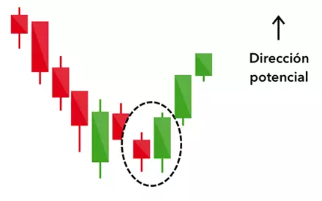

← Volver
Envolvente Alcista (Bullish Engulfing)

Descripción simple
Cuerpo alcista grande que envuelve completamente la vela previa; señal fuerte de reversión alcista.
Ejemplos
- Una vela verde grande cubre totalmente la vela roja anterior tras una caída.
- En gráfico diario, tras corrección, la envolvente sugiere inicio de nueva impulsión alcista.
Imagen de ejemplo (vela)
Interpretación y consejos
- Confirmar siempre con la vela siguiente o volumen mayor.
- Usar en contexto (soportes/resistencias, tendencia previa).
- Las señales no son 100% fiables; combinar con gestión de riesgo.